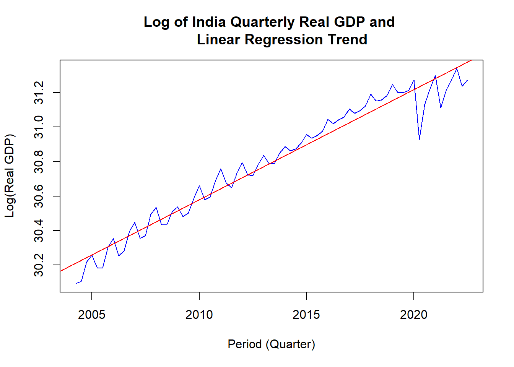

This part is for basic time series analysis on Quarterly GDP data (source:RBI). The dataset used here includes
| Year | Quarter | NGDP_NSA_XDC |
|---|---|---|
| 2004 | 2 | 7225300 |
| 2004 | 3 | 7466700 |
| 2004 | 4 | 8425900 |
| 2005 | 1 | 8738300 |
| 2005 | 2 | 8223800 |
| 2005 | 3 | 8404100 |
| 2005 | 4 | 9591900 |
| 2006 | 1 | 10069300 |
| 2006 | 2 | 9356400 |
| 2006 | 3 | 9866300 |
| 2006 | 4 | 11194300 |
| 2007 | 1 | 11780600 |
| 2007 | 2 | 11068200 |
| 2007 | 3 | 11307200 |
| 2007 | 4 | 12985900 |
| 2008 | 1 | 13639300 |
| 2008 | 2 | 13102000 |
| 2008 | 3 | 13423400 |
| 2008 | 4 | 14397200 |
| 2009 | 1 | 14395600 |
| 2009 | 2 | 14076500 |
| 2009 | 3 | 14715100 |
| 2009 | 4 | 16708100 |
| 2010 | 1 | 18148200 |
| 2010 | 2 | 17137400 |
| 2010 | 3 | 17558000 |
| 2010 | 4 | 20094700 |
| 2011 | 1 | 21692700 |
| 2011 | 2 | 20435000 |
| 2011 | 3 | 20294700 |
| 2011 | 4 | 22448500 |
| 2012 | 1 | 24185100 |
| 2012 | 2 | 23132000 |
| 2012 | 3 | 23569500 |
| 2012 | 4 | 25483800 |
| 2013 | 1 | 27254800 |
| 2013 | 2 | 25653700 |
| 2013 | 3 | 26862000 |
| 2013 | 4 | 29210700 |
| 2014 | 1 | 30608700 |
| 2014 | 2 | 29143900 |
| 2014 | 3 | 30539800 |
| 2014 | 4 | 31849200 |
| 2015 | 1 | 33146700 |
| 2015 | 2 | 32435400 |
| 2015 | 3 | 33558800 |
| 2015 | 4 | 34766300 |
| 2016 | 1 | 36958100 |
| 2016 | 2 | 36397700 |
| 2016 | 3 | 37541200 |
| 2016 | 4 | 38750100 |
| 2017 | 1 | 41227700 |
| 2017 | 2 | 40089200 |
| 2017 | 3 | 41572500 |
| 2017 | 4 | 43391900 |
| 2018 | 1 | 45846900 |
| 2018 | 2 | 45693700 |
| 2018 | 3 | 46560200 |
| 2018 | 4 | 48730000 |
| 2019 | 1 | 48012800 |
| 2019 | 2 | 49424600 |
| 2019 | 3 | 48616500 |
| 2019 | 4 | 51304100 |
| 2020 | 1 | 51403400 |
| 2020 | 2 | 38734400 |
| 2020 | 3 | 47218200 |
| 2020 | 4 | 54485400 |
| 2021 | 1 | 57571100 |
| 2021 | 2 | 51267900 |
| 2021 | 3 | 56201700 |
| 2021 | 4 | 63024500 |
| 2022 | 1 | 66152400 |
| 2022 | 2 | 64947400 |
| 2022 | 3 | 65313900 |
There are total 74 rows using nrow() formula which means
74 quarters equivalent to around 18 years data. Now to apply times
series it is important to convert the data in TS (Time
Series) format
Now if we apply linear regression model on the Nominal Unadjusted quarterly GDP then,
##
## Call:
## lm(formula = ts_gdp_data1 ~ time(ts_gdp_data1))
##
## Residuals:
## Min 1Q Median 3Q Max
## -12116175 -2221735 -804009 1722211 9911192
##
## Coefficients:
## Estimate Std. Error t value Pr(>|t|)
## (Intercept) -6172250359 150710660 -41.0 <0.0000000000000002 ***
## time(ts_gdp_data1) 3080362 74855 41.1 <0.0000000000000002 ***
## ---
## Signif. codes: 0 '***' 0.001 '**' 0.01 '*' 0.05 '.' 0.1 ' ' 1
##
## Residual standard error: 3440000 on 72 degrees of freedom
## Multiple R-squared: 0.959, Adjusted R-squared: 0.959
## F-statistic: 1.69e+03 on 1 and 72 DF, p-value: <0.0000000000000002Here, the overall model is statistically significant as the p-value is very small. Both the intercept and slope coefficients are statistically significant but the intercept coefficient does not provide any economic reasoning due to negative value.
